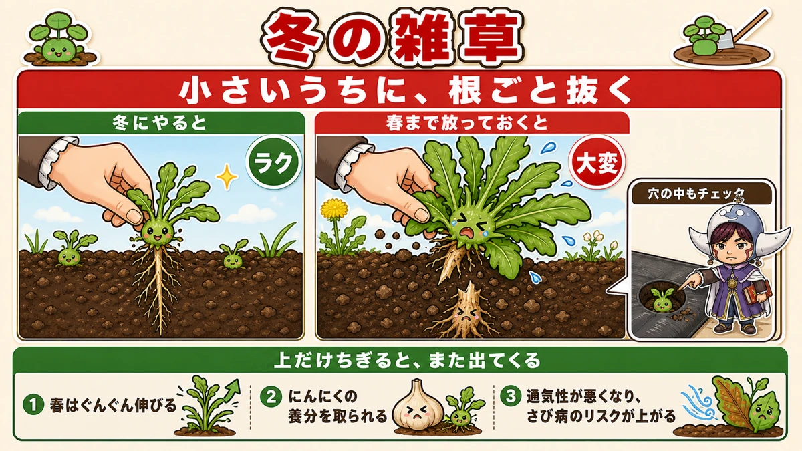
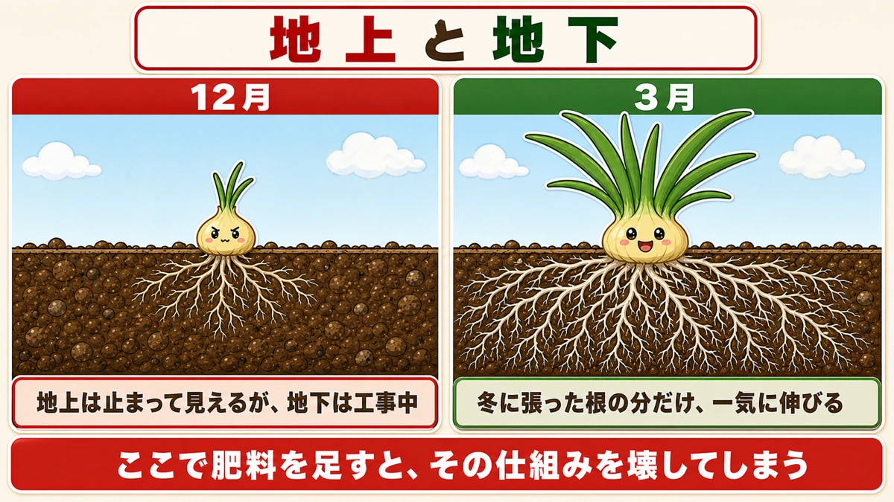

玉ねぎ・にんにくの冬管理｜追肥の時期、葉の黄変、霜柱の判断帳
どうも、8150（えいこう）です🌱 家庭菜園歴8年、理科の教員免許を持っていて、有機・無農薬で野菜を育てています。
📖 この記事の目次
この記事で分かること
- 冬の生育の遅さだけで、栄養不足とは決めません。葉の中心、根の浮き、土の湿りを順番に調べます。
- 玉ねぎとにんにくでは、防寒の考え方が違います。小さい株を守る作業と、全株を温める作業を分けます。
- 追肥の予定は、品種、元肥、肥料の種類と一緒に決めます。違う栽培方法の日程を足し合わせないことが大切です。
- 霜柱、浮いたマルチ、株のそばの雑草は、肥料を増やす前に直したいところです。
- 黄色い葉先と、傷んだ中心の芽は扱いが違います。さび色の斑点や株元の腐敗も、単なる寒さとひとまとめにしません。
- 春に新しい葉や株元の変化が出たら、冬の管理を続けるのではなく、被覆・水分・追肥の終了を見直します。
冬のうねを見て、「植えたときと、あんまり変わってへんなあ」と感じることはありますよね。ここで何かしたくなるんですが、最初に持ちたいのは肥料の袋より、観察する目の方です。
どうも、8150（えいこう）です🌱 家庭菜園を8年続け、ふだんは理科を教えています。このページでは、秋に植えた玉ねぎとにんにくを、春までどう見守るかを整理します。これから植える方のための数字も載せますが、中心は『すでに植わっている株の管理』です。
冬の仕事は大きく3つ。『根を傷める原因を減らす』『葉が光を受けられる状態にする』『予定していた肥料を、予定以上に重ねない』です。葉をぐんぐん伸ばすことばかりを目標にすると、かえって冬越しの邪魔をしてしまいます。
困っている症状が決まっている方は『失敗の見分け方』へ。何をする時期か迷っている方は『作業の手順』へ進んでください。追肥の話を調べたら説明が違って混乱した、という方には『説明が分かれていること』を用意しました。全部を一度に覚えなくても大丈夫です☺️
早見：玉ねぎとにんにくの育て方（ひと目で分かる数字）
玉ねぎの計画と、冬の確認項目
- 植え時：秋植え苗の例では、埼玉で11月10日前後。これは地域限定の目安です。寒冷地と暖地を同じ日にそろえず、苗の品種と地域の適期を確認します。
- 種まき：冬管理の材料には、全国の地域別まき時をそろえた表はありません。種から育てる場合は、種袋の適期と、苗を植えるまでの期間を別に確認します。
- 苗の太さ：植える段階で5〜6mm、鉛筆ほどの太さを目安にする説明があります。冬になってから、すべての株をこの太さにするという基準ではありません。
- 株間：15cmの栽培例があります。既存の株が小さいからといって、冬に掘り上げてこの間隔へ植え直す話ではありません。
- 植える深さ：葉が分かれる部分は地上に出します。根の浮きを直す際にも、葉の分かれ目まで土で覆わないように見ます。
- うね幅：冬管理の材料に共通の指定値はありません。列数、株間、手を入れる余裕、通路と排水を合わせて決めます。
- 元肥：植える前の土づくりで準備する肥料です。冬に追加量を考えるときは、前作と植え付け前に何を入れたかを先に確認します。
- 追肥：有機肥料で12月の1回とする説明、1月末ごろまでに終える説明、2月下旬と3月中旬に行う説明があります。肥料や栽培の前提が異なるため、一つの予定に混ぜません。
- 収穫までの日数：冬管理の材料には、品種別に起点をそろえた日数はありません。早く収穫する品種と保存向きの遅い品種を分け、苗の表示にある収穫期を使います。
- 収穫の判断：葉が倒れた順に採る方法と、7〜8割ほど倒れた段階でまとめる方法があります。倒れてから約1週間待つ説明もありますが、病気や雨続きの条件では待たない選択もあります。
- 連作の間隔：全国共通の『何年あける』という値は、この材料では確認できません。植える前の計画には、過去に育てた作物と病気の記録を残してください。
にんにくの計画と、冬の確認項目
- 植え時：関東で9月下旬〜10月中旬という説明と、9月初め〜10月という説明があります。重なる期間だけを正解にせず、地域と品種の組み合わせで考えます。
- 土づくりから植えるまで：3週間ほど置く説明と、約1か月置く説明があります。すでに植えてある株への冬の施肥間隔に、この数字を転用しないでください。
- 種球：傷、腐敗、軟らかさのないものを選ぶのが出発点です。植えた種球の大きさや発芽の遅れも、冬の株の大小に関係します。
- 株間：15cmという説明があります。植え付け時に決める間隔です。
- 植える深さ：種球の上に土を5cmかける栽培例があります。冬に芽が出た株へ、さらに5cm足す意味ではありません。
- うね幅：共通値はありません。株間だけでなく、水の逃げ道と点検しやすさを確保します。
- 元肥：植え付け前に整えます。混植の場合は、隣の野菜に施した肥料の影響も考え、にんにくだけ別枠で必ず追加するとは限りません。
- 有機肥料の追肥：12〜1月に1回という説明と、12月・2月の2回という説明が併存します。11月・2月の2回や、初回を2月とする説明もあり、日程は一律ではありません。
- 冬の葉数：4枚前後を生育の目安にする説明があります。別の越冬例には3〜6枚、草丈20cm以上という観察もあります。品種や撮影時期が違うので、最低合格点のようには使いません。
- 収穫期：秋植えで6月を予定する例があります。植えた日から全国共通の日数を数える方法ではなく、葉の黄変や枯れ方も見て決めます。
- 連作の間隔：材料に一律の年数はありません。少なくとも、腐敗や生育不良の履歴を無かったことにして同じ管理を繰り返さないようにします。
数字は『予定』と『診断』を分けて使う
植える間隔、追肥の月、冬の葉数。どれも数字なので、一緒に並べると同じくらい確かな基準に見えます。でも役割は違うんですよね。株間は植え付けの設計、追肥月は栽培方法の予定、葉数はその時点の観察です。
例えば、葉が4枚あれば腐敗も無い、とまでは言えません。草丈が20cmに届かないから追肥を倍にする、という使い方もできません。数値から外れたら、土、植えた日、種球、中心の芽へ目を向けるきっかけにしてください。
記録には、まず次の項目を残しておくと便利です。
- 品種と植えた日が分かる
- 植える前に入れた肥料の種類を確認した
- 冬に追肥した日と、使った量を残した
- 小さい株がうね全体にあるのか、一部だけなのか見た
- 葉先だけか、中心の芽まで変化しているか区別した
分からない項目があっても、それだけで失敗ではありません。今分かることから書けばOKです。記憶だけで「まだ足していなかった気がする」と判断するより、今日から記録を始める方が次の作業を選びやすくなります。
作業の手順（時期の順）
1．冬入り前に、植え付け時の条件を整理する
- 玉ねぎとにんにくの植えた日、品種、苗や種球の状態を振り返ります。
- 前作と元肥の記録を確認し、冬の追肥をどの栽培方法で行うか決めます。
- うね全体を見て、生育差が『全体』『端』『数株だけ』のどこに出ているか調べます。
- 小さい株については、肥料を足す前に葉が隠れていないか、根が浮いていないか、土が湿り続けていないかを見ます。
秋に植えた日が違えば、冬の大きさにも差が出ます。にんにくは種球が小さかったり、芽が出るのが遅かったりすることもあります。隣の大きい株と同じ見た目にするために、追加の肥料を盛る必要はありません。
玉ねぎでは、植えた苗そのものの大きさも忘れたくないところです。私も、鉛筆ほどの太さになる前の細い苗を植えて、十分に大きくならなかったことがあります。「大きすぎる苗は避ける」と覚えて、細い方へ寄せすぎたんですね。
この経験から言えるのは、細ければ安心というわけでもない、ということです。冬の小株に出会ったときも、今の葉だけを見ず、植えた時点まで戻って考えたいところ。だからといって、細い苗なら必ず育たないと決める必要はありません。保護が必要か、根が無事かを調べる入口にしましょう。
2．12月以降は、葉・株元・土を順番に見る
- 外側の古い葉と、中央から伸びる新しい葉を見分けます。
- 葉先の黄変だけか、中心まで傷んでいるか確認します。
- 株元を見て、土とのすき間や根の露出がないか調べます。確かめるために強く引っ張らないでください。
- 土の表面だけでなく、株を傷めない位置で内部の湿りも確かめます。
- 葉がマルチの下へ潜っていないか、ネットに擦れていないかを見ます。
順番を決めておくと、「なんか元気がない」で止まらずに済みます。外葉の先だけが黄色い株と、中心が傷んで株元も軟らかい株では、次にすることが違うからです。
畑を一周するたびに、すべての株を掘り起こす必要はありません。地上から分かることを先に見ます。同じ位置から写真を撮り、次の点検で比べるだけでも、新しい葉が伸びたのか、傷みが広がったのかを整理しやすくなります。
3．風のあとに、浮いたマルチと被覆を直す
- 葉が土を覆うマルチの下へ入り込んでいたら、折らないように表へ出します。
- マルチが風で持ち上がる場所を探し、固定を見直します。
- トンネル状の被覆は、支柱と布やネットの留まり方を確認します。
- 被覆が葉に触れている場所は、葉を押し込まず、被覆側の余裕を整えます。
- 修正後に、葉が再び隠れそうなすき間や、風で動く箇所が残っていないか見ます。
「ちゃんと覆ってある」は、点検の終わりではありません。覆いの下で葉が暗くなっていたら、葉が働きにくくなります。防ぐための道具が生育を邪魔していたら、なんかもったいないですよね。
葉だけを引き出しても、マルチが浮く原因がそのままなら繰り返します。葉を出す作業と、浮く場所を直す作業をセットにするのがコツです。固定の際は、株のすぐそばに無理に手を入れて根を傷めないようにします。
4．霜柱で浮いた苗を、その状態に合わせて補修する
- 冷え込んだあとの株元で、土が持ち上がった跡や根の浮きを探します。
- 浮いた周囲の土を整え、苗がぐらつかない状態へ戻します。
- 土が減って根が露出している箇所には、必要な範囲で土を補います。
- 玉ねぎの葉の分かれ目まで埋めていないか確認します。
- 小さい株が繰り返し浮く場合は、その株の保護と風の当たり方を見直します。
霜柱は、土の中の水が凍って土を押し上げる現象です。苗まで持ち上がると、根と土の接触が悪くなったり、露出した根が乾いたりします。ここでの目的は『根を土に落ち着かせる』こと。肥料で葉を増やす作業とは別です。
補修だからといって、うね全体を深く掘り返す必要はありません。浮いた株と低くなった場所を見て対応します。冬に苗を支えるための土と、春に大きくなって露出した玉を覆う土も、同じ扱いにはしないでください。
5．小株の防寒と、順調な株の管理を分ける
- 小さな株が多い場所、風当たりの強い場所、霜柱が繰り返す場所を見つけます。
- 順調な株と同じだけの保温が必要か、作物ごとに考えます。
- にんにくでは防風を中心にする方法と、小株を穴あきの被覆で保温する方法を分けて選びます。
- 玉ねぎでは、育ちすぎを防ぎたい株まで一律に温めないようにします。
- 覆ったあとは、葉の接触、内部の湿り、雑草、支柱や固定の緩みも点検します。
玉ねぎは「暖かければ暖かいほどよい」とは言い切れません。年内に大きく育ちすぎることや、冬も温め続けることが、とう立ちの心配につながる説明があります。とう立ちは、食べたい玉を育てる流れから、花を咲かせる方へ進むことです。
にんにくの小株を保温する話を、そのまま玉ねぎの全株へ移さないようにしてください。作物が違ううえに、同じ作物でも苗の大きさが違います。防寒は『冬野菜だから全員同じ上着』ではないんですね。
雪や強風のあとは、被覆があるかだけでなく形も確認します。潰れて葉を押さえていたり、固定が外れて動いたりしていれば、その状態を直します。ここでは支柱を何本にする、雪が何cmなら安全という共通値は設けません。使う被覆の構造と、実際の傷みを見てください。
6．予定した追肥を行い、追加した日を残す
- 『玉ねぎかにんにくか』『元肥は何か』『冬の追肥計画はどれか』を確認します。
- 手元の肥料の表示で、対象作物、量、施す位置を確かめます。
- 小ささだけを理由に、表示や計画を超える量を与えないようにします。
- 施した日と量を記録します。混植なら、隣の野菜への施肥も記録に含めます。
- すぐに葉が伸びなくても、効かなかったと決めて重ねません。
追肥は、植えたあとに追加する肥料のことです。冬の予定にはいくつもの説明があるため、詳しい比較は後ろの章で整理します。ここで大切なのは、別の予定へ移るたびに追加しないことです。
例えば、12月に施したあと、別の説明で1月の追肥を見つけ、さらに2月の説明でもう一度。こうすると、どの栽培方法にも無かった回数になります。参考にした予定を増やすほど、肥料まで増えてしまう。これは避けたいところです。
また、『ひとつまみ』は分かりやすい言葉ですが、重さを確定する単位ではありません。粒の大きさや成分が違えば同じつまみ方でも量が変わります。個々の肥料の表示を優先し、別の製品へ指の感覚だけで移し替えないでください。
7．冬の雑草は、野菜を動かさずに取る
- 通路とうねの表面を見たあと、マルチの穴の中を調べます。
- 野菜の株元に近い雑草は、野菜側が一緒に浮かないよう押さえて取ります。
- 小さい穴で手が入りにくいときは、ピンセットなどで作業しやすくします。
- 雑草を取ったあとに、野菜の根が露出したり、土がへこんだりしていないか見ます。
- 必要なら周囲の土を整え、野菜を安定させます。

冬は草の地上部が小さくても、根は思ったより伸びていることがあります。春まで待つと、抜く際に玉ねぎまで動かしやすくなります。『小さいうちに取る』には、養分を奪わせないことと、野菜を傷めずに作業しやすくすることの両方があります。
草を見つけたら勢いよく引っ張る、という作業にしないのがポイントです。草が無くなっても、野菜の根まで浮いたら仕事が増えてしまいます。特に細い苗のそばは、ちょっと丁寧にいきましょう。
8．にんにくの芽は、切る前に対象を見分ける
- 一本の株に葉が何枚もあるだけなのか、株元から別の芽が出ているのかを見ます。
- 別々に植えた種球が近接している場合と、同じ株の脇に芽が出た場合を区別します。
- 複数の芽を整理する必要がある場合でも、残す中心の芽を傷めない方法を確認します。
- 同一株の脇芽を整理する説明には、引き抜かずハサミで切る方法があります。対象が曖昧なまま株を引っ張らないでください。
- 春に伸びる花茎の処理は、冬の脇芽整理と別の作業として考えます。
『にんにくの芽を取る』という言葉だけで作業すると、対象を間違えやすいです。普通に伸びている中心の芽、脇から増えた芽、春の花茎。名前が似ていても、全部を切る話ではありません。
冬の点検では、まず数と出ている場所を確認すれば十分です。複数芽の切る位置を何cmと決めたり、再び出たら何回切ると決めたりする共通の手順は、ここでは設けません。判断がつかないものは、その場の勢いで処理せず、植えた配置や株元の様子を確認してください。
9．春の新しい葉と株元を見て、管理を切り替える
- 新しい葉が出ているか、茎や株元が太くなってきたかを調べます。
- 冬にかけた被覆を、暖かくなっても同じままでよいか見直します。
- 土が内部まで乾いているのか、湿りが残っているのかを確かめます。
- 肥大が始まった株は、冬の小株対策をそのまま続けず、追肥の終了を確認します。
- 病斑や株元の傷みが広がっている場合は、生育の遅さだけとして扱わないようにします。
『何月になったら一斉に切り替え』と考えるより、株の変化と地域の気候を合わせて見ます。春のにんにくでは乾燥時の水やりを考える説明がありますが、湿った土へ毎回与える意味ではありません。
収穫が近づいたら、目標も確認してください。玉ねぎを早く食べたいのか、乾かして保存したいのかで、待つ期間は変わります。冬越しできたことと、最後まで畑に置くことは別。病気や雨の条件まで含め、収穫を待つ価値があるか考えます。
失敗の見分け方（症状→原因→やること）
玉ねぎが、冬になっても細く小さい
- 症状：葉があまり伸びず、周囲の株との差が目立ちます。
- 考えられる原因：植えた苗が細かった、植える時期が遅かった、根が浮いた、葉がマルチに隠れた、土が湿りすぎているなど。見た目だけでは肥料不足に決まりません。
- やること：植えた日と苗の状態を振り返り、株元と被覆を調べます。物理的な問題を直したあと、中心の葉の変化を見ます。追肥は元の計画と照合します。
数株だけ小さいなら、その株の周囲を見るところから。うね全体が小さいなら、植え時や元肥、雨のあとに水が残る条件も振り返ります。どちらも「小さいから多めに与える」で済ませないのが大切です。
大きい株との差があることと、その株が今後育たないことは別です。中心に健全な芽があるのか、悪化が続いているのかを分けてください。小ささだけで抜く判断を急がなくても大丈夫です。
にんにくの葉先が黄色い、古い葉が枯れた
- 症状：外側の葉や先端に黄変があるものの、中心には緑の部分があります。
- 考えられる原因：寒さや雨の影響、古葉の変化など。冬の葉先の黄変だけで、株全体が駄目になったとは言えません。
- やること：中心の芽、株元、土の湿りを合わせて見ます。まだ緑のある葉までまとめて切らず、追肥や水やりの繰り返しも避けます。
葉の先が枯れたからといって、葉を根元から全部取り去る必要はありません。生きている部分も失ってしまいます。枯葉を片づける説明は『完全に枯れたもの』が対象で、先だけ黄色い葉とは区別します。
この状態で大切なのは、黄変があることそのものより、変化の広がりです。次の点検で中心にも傷みが出たら、同じ『古い葉の変化』として放置せず、見直してください。
中心の芽が傷み、株元が軟らかい・ぐらつく
- 症状：外葉だけではなく、中央の新しい部分が傷んでいます。株元に軟らかさや不安定さが出ることもあります。
- 考えられる原因：根や株元の傷み、腐敗、病気、虫害など。霜柱で浮いた場合もあるので、ぐらつきだけで病名を決めません。
- やること：根の浮きと腐敗らしい変化を分け、周囲の土の湿り、隣の株、被覆の接触を確認します。追加の肥料で解決しようとせず、状態が分かる写真を残します。
触った感触だけで、さび病やべと病を確定することはできません。べと病は病気の名前ですが、株元が軟らかいものを全部その病気と呼ぶわけではありません。『異常を疑う手掛かり』と『病名の確定』は分けます。
傷んだ中心の芽に対して、「冬だから普通」と安心しきるのも避けたいところです。葉先の黄変に対する見守りと、中心が傷んだ株への対応を同じ説明にしないでください。
雨のあと、土が湿ったままで株が弱っている
- 症状：土の内部に湿りが続き、葉の黄変や生育の遅さが見られます。
- 考えられる原因：水はけの悪さ、雨の多さ、必要以上の水やりなど。肥料を増やしても水の停滞は解消しません。
- やること：追加の水を与える前に内部の湿りを確認し、通路などに水がたまる場所がないか見ます。根を傷めるような深い掘り返しは避け、被覆内の状態も点検します。
土の表面が乾いて白っぽくても、中は湿っていることがあります。反対に、プランターは畑とは乾き方が違います。『冬は水をやらない』だけを覚えて、土の状態を見なくなるのも困ります。
判断に迷ったら、まず水を足す理由を具体的にしてください。「小さいから」だけなら、乾燥を確かめたことにはなりません。湿りが残る土に追加する前に、いったん立ち止まって見ましょう。
葉に赤茶色やさび色の斑点が出た
- 症状：葉に点状の変化が出て、時間とともに増えることがあります。
- 考えられる原因：さび病などの病気が候補です。ただし、葉色や写真だけで確定できるとは限りません。
- やること：斑点の位置と広がりを記録し、ほかの株にも変化がないか点検します。雑草や枯葉、過湿、過剰な施肥を見直します。葉に何かを散布する前に、病気と使用する資材を確認してください。
さび病は、菌が関わる病気です。だからといって、「菌ならアルカリ性のものをまけば解決」と飛躍することはできません。台所や土づくりで使うものでも、葉に使う量や影響まで同じとは限らないからです。
斑点が見つかった日と写真は、後で状況を説明するときにも役立ちます。必要なら地域の園芸相談先などへ、株全体と斑点の両方が分かる状態で相談してください。自作の配合を試してから病名を考える順番にはしません。
葉が波打つ、肥大期にも肥料を足したくなる
- 症状：葉の形がでこぼこしたり、小さいまま肥大の時期に入ったりしています。
- 考えられる原因：肥料の多さを疑う説明がありますが、葉形だけでは確定できません。小ささの背景には初期生育や根の傷みも考えられます。
- やること：これまでの施肥を確認し、追加を急ぎません。新葉と株元の変化から、すでに肥大が始まっているかを調べます。
肥大期は、収穫する玉や球が大きくなる時期です。ここまで来てから「取り戻したい」と思っても、冬と同じ追肥を足せばよいとは限りません。大きさを追うことが、保存や病気の面で不利になる場合もあります。
次の栽培で改善するなら、苗や種球の選び方、植えた日、元肥、排水の順に振り返ります。今年の株へ何かを足すことだけが、立て直しではありません。
説明が分かれていること
にんにくの有機追肥は、1回か2回か
- Aという説明：有機栽培では12〜1月に1回でよいという年間計画があります。
- Bという説明：有機肥料を使い、12月と2月に計2回施す計画があります。
- どう考えればよいか：同じ『有機』でも、共通の土壌条件や元肥量をそろえた比較ではありません。回数を平均して決めたり、1回は初心者向け、2回は上級者向けと理由を付けたりはできません。
出典の種類は、どちらも栽培を解説した動画です。同じ種類の情報に異なる予定があるので、どちらかを全国共通の正解として残すことはしません。選ぶ際は、手元の肥料の表示、元肥、地域、品種まで含めて一つの方法を確認します。
ここで避けたいのは、Aの1回を行ったあとに、Bの2回を丸ごと追加することです。予定が違うことに気づいたら、まず『すでに入れた分』を記録から拾います。新しい説明に出会うたび、施肥の履歴がゼロに戻るわけではないんですよね。
玉ねぎは冬に追肥するのか、春にするのか
- Aという説明：有機肥料を使い、12月に1回だけ施す方法があります。別の冬越しの説明では、1月末ごろまでに有機追肥を終えるとしています。
- Bという説明：2月下旬と3月中旬に施す方法があります。そこでいったん終える説明に、生育次第で追加を考える留保もあります。
- どう考えればよいか：冬の有機施肥と春の施肥を一つの暦へ足し合わせません。Aの中にも時期の違いがあるので、『冬ならいつでも同じ』と丸めないようにします。
こちらも、出典は複数の栽培動画です。手元の種袋や肥料の表示から得た日程と同じものだとは限りません。品種によって収穫期が違うこともあるため、月だけが一致しているかを見るより、どの作物をどう育てる予定かを確認します。
『冬の小ささを心配して施肥を繰り返さない』という注意は大切です。でも、それを『玉ねぎは冬も春も一切追肥しない』に変えると、別の栽培方法まで消えてしまいます。必要な追肥と、不安からの追加は分けて考えてください。
追肥の終了は、1月末と決めてよいのか
- Aという説明：有機肥料を春に効かせるため、1月末ごろまでに終える方法があります。
- Bという説明：にんにくは2月に追肥する予定、玉ねぎは3月中旬まで施す予定もあります。一方、肥大が始まったら追加しないという注意があります。
- どう考えればよいか：日付だけの共通期限は設けません。選んだ施肥方法の最終時期と、株が肥大を始めたかを一緒に見ます。
『止め肥』は、最後の追肥や、そこから肥料を追加しない区切りを指す言葉として使われます。言葉を知るだけで、全品種の最終日が分かるわけではありません。冬の予定を守ることと、春の株の状態を確認することの両方が必要です。
時期を逃した小株に、春の液肥を例外として使う説明もあります。ただし、調製方法や使える条件がそろっておらず、常に安全とは言えません。このページでは『遅れたら液肥で取り返す』という手順にはしません。
にんにくの防寒は、風よけだけでよいのか
- Aという説明：寒さに強いので、保温を強めず、防虫ネットなどによる防風を中心にする方法があります。
- Bという説明：生育の遅れた小株は、穴あきの被覆で温めて冬を越す方法があります。
- どう考えればよいか：通常の株と遅れた株の扱いが違います。全株を密閉する理由にはせず、苗の状態と湿りを見て選びます。
防虫ネットは虫を防ぐための網、保温用の被覆は内部を暖めるための覆いです。『覆う』という操作が同じでも、目的まで同じとは限りません。風を弱めたいのか、生育の遅れた株を温めたいのかを先に決めましょう。
保温した小株の途中経過がよい、という報告もあります。ただ、収穫までの結果を確定した比較とは違います。覆えば大株と必ず同じ収量になる、という期待を持たず、その後の葉や株元を点検します。
にんにくの複数芽は、切るのか抜くのか
- Aという説明：主な芽の脇から出た芽をハサミで切り、残す株を傷めるので引き抜かないという方法があります。
- Bという説明：葉にんにくとして一本を取り、残りを育てる実演があります。
- どう考えればよいか：同じ種球の脇芽と、近接した別の種球が同じ対象とは限りません。対象を確認せず『いつも抜く』『いつも切る』と統一しないようにします。
葉にんにくは、葉を食用に収穫する育て方です。球を大きく育てる作業と重なる部分はあっても、目的が完全に同じではありません。自分の株がどちらの状態に当たるか不明なら、無理に抜かないことを優先します。
冬に水を控える話と、春の乾燥時に与える話
- Aという説明：冬の小さな玉ねぎに、成長させたいからと水を追加するのは避けます。にんにくでも過湿を警戒します。
- Bという説明：春の肥大期のにんにくで、内部の土まで乾いている場合は水を与える説明があります。
- どう考えればよいか：作物、生育段階、土の状態が違います。『通年で水やり不要』にも『春なら毎回水やり』にもまとめません。
この違いは、矛盾を一つの答えに直すより、条件を分ければ理解しやすくなります。冬の湿った土と、春の乾いた土を、同じ理由で扱わないということです。プランターにも畑と同じ頻度を当てはめず、実際の土を見ます。
病気を見る時期と、収穫後の乾燥時間
- Aという説明：さび病は4〜5月に注意するという話があります。収穫後の畑での表面乾燥は、30分以上、余裕があれば2〜3時間という例があります。
- Bという説明：冬入りの11月下旬〜12月初旬にもさび病を警戒する話があります。玉ねぎを収穫後に1日以上乾かすという例もあります。
- どう考えればよいか：病気の発生月は地域と気候に左右されます。乾燥は作物や工程が違うため、短い方と長い方を平均しません。
病気は『まだ冬だから見なくてよい』とはしないこと。乾燥は『表面の土を落とすための乾燥』と『保存へ向けてさらに乾かす工程』を区別すること。この二つを押さえておくと、数字をそのまま移す失敗が減ります。
よくある質問
12月の玉ねぎが小さいままでも大丈夫ですか
冬は葉の伸びが緩やかになるため、小ささだけで失敗とは決めません。中心の芽、根の浮き、土の湿り、葉がマルチに隠れていないかを確認します。明らかな傷みがある株まで『冬だから正常』と扱わないことが大切です。
にんにくの葉先が枯れたら、肥料を与えますか
葉先や古葉の変化だけなら、追肥の理由にはなりません。中心の健全さと株元も見てください。予定した施肥がある場合は履歴と照合し、黄変を見るたびに追加しないようにします。
冬のにんにくは、葉が何枚なら安心ですか
4枚前後を目安にする説明がありますが、全国共通の合否判定ではありません。品種、植えた日、発芽の時期が違えば見た目も変わります。葉数に加え、中心の芽が無事か、根が傷んでいないかを確認します。
1月末を過ぎたら、どの肥料も使えませんか
一律には言えません。有機肥料を1月末ごろまでに施す方法と、2〜3月に追肥する別の方法があります。自分が選んだ施肥体系を確認し、すでに肥大が始まった株へ追加してよいかは別に考えます。
追肥したのに変化がありません。もう一度足しますか
すぐ葉に変化が出ないことだけでは、追肥不足と判断できません。肥料の種類、気温、土の状態で効き方は変わります。入れた日と量を確認し、根の浮きや過湿など、肥料以外の原因を先に点検してください。
『ひとつまみ』をグラムに直してもらえますか
肥料の粒の大きさ、形、成分がそろわないため、一律の重さへ換算できません。材料にも共通の重量はありません。使う肥料の表示にある量を確認し、別の資材の粒数やつまみ方を流用しないようにします。
玉ねぎもにんにくも、同じトンネルに入れてよいですか
必要な保護が同じとは限りません。玉ねぎは育ちすぎによるとう立ちを考え、にんにくは小株の保温と通常株の防風を分けます。すでに一緒に覆っている場合も、それぞれの大きさ、葉の接触、湿りを確認してください。
霜柱を直すために、株元へたくさん土をかけますか
根が浮いた部分を安定させるのが目的です。葉の分かれ目まで深く埋める作業にはしません。春に露出した玉ねぎの玉へ土をかけることとも別なので、何を支えたいのかを見て補修します。
葉が黄色い部分を全部切った方がよいですか
先端が黄色い葉と、完全に枯れた葉は分けます。まだ緑のある葉まで一括で取り除かないでください。特に中心の芽を傷めないようにし、枯葉の片づけを生きた葉の剪定と混同しないことが大切です。
冬にも、にんにくの芽かきをしますか
株元から複数の芽が出ていれば、整理が必要か点検します。ただし、一本の株に複数の葉があるだけなら別です。普通の中心の芽や葉先を切る作業ではなく、春の花茎を取る作業とも区別します。
石灰を葉へまけば、さび病を防げますか
この材料だけで、資材の種類、量、効き目をそろえた推奨はできません。葉の斑点を確かめ、雑草、過湿、施肥の多さを見直します。『土づくりに使える』という表示だけで、葉への散布に置き換えないでください。
無農薬なら、にんにくは必ずさび病になりますか
『必ず』とは言えません。地域、その年の気候、生育状態が違います。冬入りにも春にも葉を点検し、斑点が出た場合は病名の確認を進めます。予防管理をしたことと、発病しない保証があることは別です。
プランターにも冬の水やり不要という話を使えますか
そのままは使えません。容器、土の量、雨が入る場所かどうかで乾き方が変わります。内部の土と株の状態を見て判断します。このページでは、何日おきに何mlという共通量は設けていません。
イチゴと混植しているにんにくにも、別に追肥しますか
イチゴと同時期に株間へ施すため、にんにくへ独立した追肥をしない栽培例があります。ただし、混植なら全部不要とは言えません。隣の野菜へ何をどこに入れたかを確認し、同じ場所へ重ねないようにします。
春まで小さい株は、すぐ抜いた方がよいですか
大きさだけで急いで抜く必要はありません。中心が健全なのか、株元に腐敗があるのかを区別します。健全でも大きな収穫を保証するわけではないので、収穫の目的と残す場所を考えて見守ります。
学ぶ：冬の根と春の肥大のしくみ🔬
葉の伸びだけでは、根の状態は分かりません
冬の株を見るとき、目に入るのは葉です。だから葉が伸びないと、株全体が何もしていないように感じます。でも、地上の長さを測るだけでは、根が土に定着しているか、浮いているか、傷んでいるかまでは分かりません。

根は、土から水や養分を受け取り、株を支える場所です。冬の管理で根の浮きや過湿を気にするのは、春に葉や球が育つときにも、この働きが必要だからです。目に見える葉だけを立派にすることが、準備のすべてではありません。
ただし、「冬の小株なら、地下は必ず順調」とまでは言えません。根が浮いている株、湿り続ける土の株、中心まで傷んだ株は別に見る必要があります。地上と地下を分けて考えるのは、見えない部分を都合よく想像するためではなく、葉の長さだけの判断を避けるためです。
葉は光を受け、植物が使う養分を作る場所でもあります。マルチの下に潜った葉を表へ戻すのは、その働きを邪魔しないためです。葉先に傷みがあっても緑の部分が残る葉をむやみに切らない理由も、ここにつながります。
種球の大きさは、冬の生育差の出発点です
にんにくは、種球から芽と根を出して育ち始めます。種球は最初の生育に使う蓄えを持っています。そのため、種球が小さいことや発芽が遅れたことは、同じうねの中で大きさが違う理由になります。
ここで肥料を多く足しても、植え付け前の種球が大きくなるわけではありません。過ぎた生育期間も戻りません。肥料は養分の補給ですが、種球の質、時期、根の状態を全部置き換えるものではないんですね。
玉ねぎも、苗が細かったことや植える時期が違ったことを無かったことにはできません。小株を見つけたら、今日の葉だけでなく、スタート地点と途中の出来事を確認する。その方が、何を直せるのか見えてきます。
有機肥料が効く時期は、固定の時計ではありません
有機肥料の中には、土の中で分解が進み、植物が利用できる形になるまで時間が必要なものがあります。冬に先回りして施す説明があるのは、今の葉をすぐ伸ばすためだけでなく、後の生育を見込んでいるからです。
ただ、その時間を『必ず1か月』『1月に施せば必ず3月に効く』と決めることはできません。使う肥料の性質、温度、水分などで条件が変わるためです。この材料に出てくる予定の違いも、日付だけで解消できません。
化成肥料は、必要な成分を配合して作った肥料です。有機肥料と同じ暦で使うとは限らず、製品ごとの効き方や表示を確認します。どちらが上という話ではなく、同じ回数と量を移してよいか、という話です。
冬の変化が少ないと、つい「まだ効いてないんやな」と思います。でも、そこで追加してしまうと、後から効く分まで重なる可能性があります。目に見える結果を急いで、記録のない追肥を増やさないことが大切です。
肥料を足すことと、病気を防ぐことは同じではありません
窒素は、葉や体を作るために必要な養分です。必要だからこそ、不足を補う施肥には意味があります。一方で、過剰な施肥は病気や保存の問題につながるという注意が、冬管理の材料に繰り返し出てきます。
ここから「大きい株は全部不健康」「窒素は悪者」と受け取る必要はありません。問題は、株の状態や元肥を確かめずに増やすことです。必要な養分を、必要な時期に補う考え方と、不安のたびに追加する行動を分けます。
肥料を増やしても、マルチに隠れた葉が出てくるわけでも、霜柱で浮いた根が戻るわけでもありません。土が湿り続けている原因も、そのままです。原因と対策が合っているかを確かめることが、病気を起こしにくい管理の土台になります。
さび病には菌が関わりますが、肥料を控えれば完全に防げるという保証はありません。根や葉を健全に保つ管理と、実際に出た病斑の確認は別の仕事です。『予防をしたから病気ではないはず』と判断しないようにします。
春の肥大は、冬の葉の伸びと目的が変わります
春には、にんにくの新芽や茎の太さ、玉ねぎの株元の膨らみなど、冬とは違う変化が見えてきます。収穫したい部分を育てる段階へ進むため、冬と同じ「もっと葉を増やしたい」で管理を続けないようにします。
にんにくの春の花茎は、花へ向けて伸びる部分です。球を大きくしたい栽培で花茎を取る話は、養分の使い道を考える作業です。冬に中心から出た普通の芽を切ることとは違います。名前の『芽』だけで同じ操作にしないでください。
玉ねぎでは、とう立ちさせず玉を収穫したいので、苗の大きさや防寒の程度を気にします。同じ秋植えでも、にんにくの花茎の話と、玉ねぎのとう立ちを避ける話には違いがあります。隣に植わっているから同じ管理、とはいかないところです。
観察するなら、同じ株の変化を追います
理科として面白いのは、『今大きいか』だけでなく、『どう変わったか』を見ることです。観察用に株の位置を決め、葉先、中心、株元を同じ角度で撮ってみてください。天気、被覆を直した日、施肥した日も添えると、後から比べやすくなります。
観察のためだけに、冬の株を次々と抜く必要はありません。植えた日が違う二株を見て、保温だけの効果だと結論づけるのも早いです。種球や苗の状態、元肥、水はけなど、ほかの条件も違う可能性があります。
お子さんと見るなら、「この葉の先は黄色いけど、真ん中はどうかな」「根元の土は動いていないかな」と、確認する場所を分けると分かりやすいです。病名を当てるクイズにせず、見えたことを言葉にする。冬の静かなうねでも、観察するものはけっこうありますよ🧅
まとめ
冬の玉ねぎとにんにくで、先にしたいのは『小さい株を大きくする操作』ではなく、『その株が小さい理由を確かめる点検』です。手をかけるなら、原因に合うところへかけましょう。
- 葉先と中心を分け、寒さによる変化と、株全体の傷みを一緒にしない
- 株元の浮き、土の内部の湿り、マルチやネットの接触を確認する
- 霜柱や雑草への対応では、野菜の根を動かさず、作業後の土も整える
- 防寒は、作物と苗の大きさで分ける。玉ねぎを一律に温め続けない
- 追肥は一つの栽培方法で計画し、使った肥料・量・日を記録する
- 葉の伸びが遅くても、施肥の回数を不安で増やさない
- にんにくの普通の芽、脇芽、春の花茎を区別する
- 春の新葉や肥大が見えたら、被覆、水分、追肥の終了を見直す
全部を一日で片づけなくても大丈夫です。次に畑へ行ったら、小さい株を一つ選び、葉の中心と株元から見てみてください。「何を足そう」より先に、「何が起きているかな」と見る。それだけでも、選ぶ作業が変わってきます。
ここまで読んでくださって、ありがとうございます。冬は派手な変化が少ない分、直せるところを一つずつ見つける季節です。みなさんのうねに合う管理を選ぶときに、この判断帳へ戻って来てもらえたらうれしいです🌱
炭化鶏ふん
追肥はマルチの穴に一つまみ。3本の指で軽くつまむ程度、粒の数で20粒くらいです。粒状なので、この「少しだけ」がやりやすいのがありがたいところ。玉ねぎは12月下旬〜1月、にんにくは1月に。
![[商品価格に関しましては、リンクが作成された時点と現時点で情報が変更されている場合がございます。]](https://hbb.afl.rakuten.co.jp/hgb/55e7612a.7de1526b.55e7612b.01a50904/?me_id=1214866&item_id=10002182&pc=https%3A%2F%2Fthumbnail.image.rakuten.co.jp%2F%400_mall%2Fkaju%2Fcabinet%2F00714580%2F03462454%2F07486601%2Fimgrc0071643813.jpg%3F_ex%3D240x240&s=240x240&t=picttext "[商品価格に関しましては、リンクが作成された時点と現時点で情報が変更されている場合がございます。]")

もみ殻くん炭
霜柱で苗が浮くのを防ぎます。ミネラルの補給になり、地温を高めてくれる。冬にいちばん働く資材だと思っています。アルカリ性なので、まきすぎには気をつけてください。
![[商品価格に関しましては、リンクが作成された時点と現時点で情報が変更されている場合がございます。]](https://hbb.afl.rakuten.co.jp/hgb/56bc30bc.01c5b89d.56bc30bd.ee310357/?me_id=1231595&item_id=10000412&pc=https%3A%2F%2Fthumbnail.image.rakuten.co.jp%2F%400_mall%2Fplanto-iwa%2Fcabinet%2F2707.jpg%3F_ex%3D240x240&s=240x240&t=picttext "[商品価格に関しましては、リンクが作成された時点と現時点で情報が変更されている場合がございます。]")
カキ殻石灰（有機石灰）
土の酸度を整えるのに使います。まく量は、酸度を測ってから袋の表示で決めてください。さび病の予防は石灰ではなく、肥料を多すぎず切らさず、病気の葉を畑の外へ出すのが基本です。
![[商品価格に関しましては、リンクが作成された時点と現時点で情報が変更されている場合がございます。]](https://hbb.afl.rakuten.co.jp/hgb/56d21b6a.c19127f6.56d21b6b.c5473e84/?me_id=1258048&item_id=10000067&pc=https%3A%2F%2Fthumbnail.image.rakuten.co.jp%2F%400_mall%2Fkaneashop%2Fcabinet%2F12084383%2F12419790%2Fimgrc0108924525.jpg%3F_ex%3D240x240&s=240x240&t=picttext "[商品価格に関しましては、リンクが作成された時点と現時点で情報が変更されている場合がございます。]")
防虫ネット
雪よけに使います。ダンポールをいつもの倍に増やして張ると、雪の重みでも潰れません。小さい株ほど雪の影響を受けるので、そこから優先して。
![[商品価格に関しましては、リンクが作成された時点と現時点で情報が変更されている場合がございます。]](https://hbb.afl.rakuten.co.jp/hgb/56bc205d.0066fedc.56bc205e.af56d163/?me_id=1260467&item_id=10000299&pc=https%3A%2F%2Fthumbnail.image.rakuten.co.jp%2F%400_mall%2Fmarsol-morishita%2Fcabinet%2Fshouhinn%2Fbouchuu%2Fimgrc0090950099.jpg%3F_ex%3D240x240&s=240x240&t=picttext "[商品価格に関しましては、リンクが作成された時点と現時点で情報が変更されている場合がございます。]")
剪定バサミ
冬にもう一度出てきた芽を切るときに使います。手で引き抜くと株ごと傷めるので、必ずハサミで。切れ味の悪いものだと切り口がつぶれて、そこから病気が入ります。
![[商品価格に関しましては、リンクが作成された時点と現時点で情報が変更されている場合がございます。]](https://hbb.afl.rakuten.co.jp/hgb/56d22030.def85fa7.56d22031.b89fde86/?me_id=1250472&item_id=10022339&pc=https%3A%2F%2Fthumbnail.image.rakuten.co.jp%2F%400_mall%2Fplantz%2Fcabinet%2F01%2Ft-13.jpg%3F_ex%3D240x240&s=240x240&t=picttext "[商品価格に関しましては、リンクが作成された時点と現時点で情報が変更されている場合がございます。]")